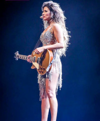
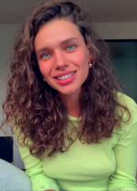
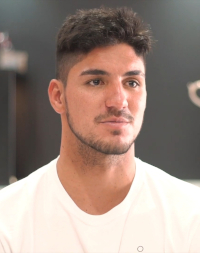
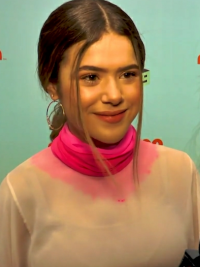
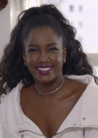
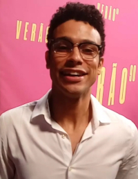

Veja os 10 famosos mais cogitados para o BBB23
Nessa matéria vamos ver os famosos que estão na lista de cogitados para a casa mais vigiada do Brasil
1. Paula Fernandes 🐴
Paula Fernandes de Souza é uma cantora, compositora, atriz, escritora, empresária e multi-instrumentista brasileira. Fernandes que começou a cantar aos oito anos de idade, já vendeu em sua carreira mais de 6 milhões de discos e ganhou 2 grammys latinos.
2. Zeca Pagodinnho 🍺
Zeca Pagodinho, nome artístico de Jessé Gomes da Silva Filho, é um cantor e compositor brasileiro. Gravou mais de 20 discos e é considerado um grande nome do gênero samba.
3. Leticia Bufoni 🥇
Leticia Bufoni e Silva é uma skatista profissional brasileira, considerada um dos maiores nomes da historia do esporte.
4. João Guilherme 🐲
João Guilherme de Ávila Costa é um ator e cantor brasileiro.Ficou conhecido nacionalmente por interpretar o personagem Joaquim, um dos protagonistas do remake da novela infantil Cúmplices de um Resgate e Luca Tuber em As Aventuras de Poliana.
5. Bruna Linzmeyer 🍃
Bruna Linzmeyer é uma atriz brasileira, também reconhecida pelo seu ativismo nos movimentos feminista e LGBTQIA+. Suas interpretações mais emblemáticas são Linda, personagem autista na novela Amor à Vida.
6. Gabriel Medina 🌊
Gabriel Medina Pinto Ferreira é um surfista profissional brasileiro de ascendência chilena. Mais conhecido por ser o tri-campeão mundial de surf da ASP World Tour de 2014, 2018 e 2021, sendo o primeiro brasileiro a vencer um mundial de Surf.
7. Maisa Silva 💗
Maisa da Silva Andrade é uma atriz, apresentadora, dubladora e ex-cantora brasileira. Foi descoberta aos três anos, quando participou de um quadro de calouros do Programa Raul Gil, na RecordTV e na Band.
8. Felipe Neto 😎
Felipe Neto Rodrigues Vieira, mais conhecido como Felipe Neto, é um youtuber, empresário, ator, comediante, escritor e filantropo brasileiro. É conhecido por ter um dos maiores canais brasileiros do YouTube, com 44,5 milhões de inscritos e mais de quinze bilhões de visualizações acumuladas.
9. Iza ⭐
Isabela Cristina Correia de Lima, mais conhecida pelo seu nome artístico Iza, é uma cantora, compositora, apresentadora e publicitária brasileira. Seu primeiro álbum, Dona de Mim, foi lançado em 2018 e recebeu uma indicação ao Grammy.
10. Sergio Malheiros ⚡
Sérgio Santiago Victoriano Santos Malheiros é um ator brasileiro. Estreou em 1999 no programa Samba, Pagode e Cia na Rede Globo em 2000 no programa Gente Inocente.
